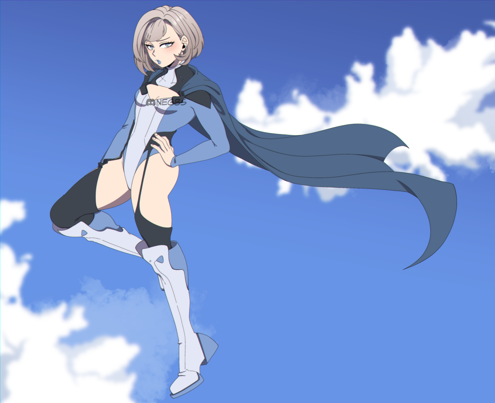
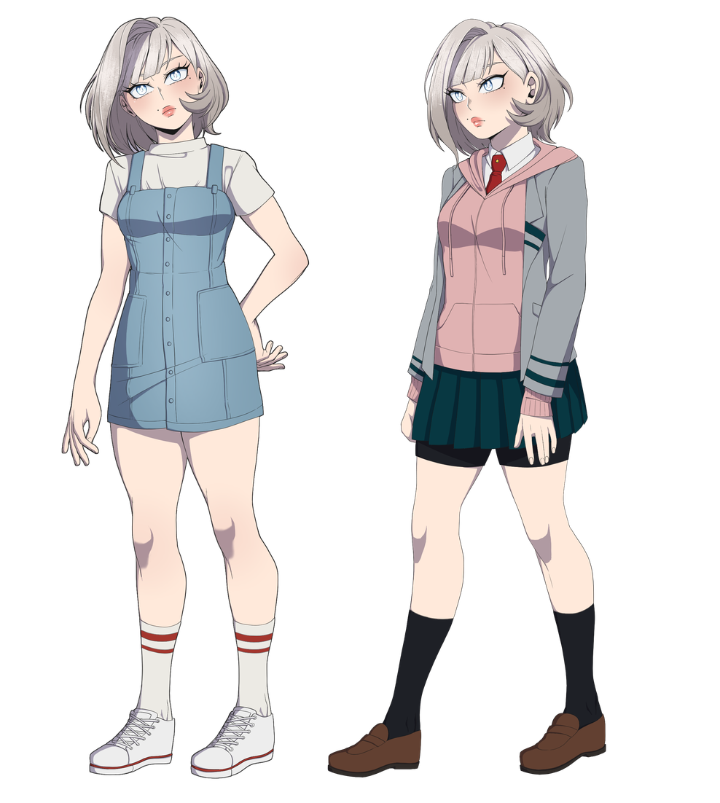

Negate
量力 成美 • Ryōriki Narumi
"Don't make it weird. I was already standing here." Narumi, after catching a classmate mid-fall and immediately pretending she had not.
Ryōriki Narumi (量力 成美), known by the hero name Negate, is a student in Class 1-A at U.A. High School and a former child actress. Guarded and dry, she hides behind an air of boredom that conceals how sharply she reads the people around her, and how much she actually cares about them. Her Quirk, Negative Mass, gives her flight, strength, and force manipulation potent enough that she spends more effort restraining it than using it.
Appearance / 外見
Narumi has soft, well-balanced features that give her a gentle, approachable look, one that contrasts sharply with the destructive potential of her Quirk. Her lips are naturally plush and expressive, lending her an air of calm composure even when she is deliberately withholding emotion.
Her pale blue eyes are her most defining trait: light in color, but carrying a sharp, assessing quality that can feel unsettling when held too long. Two beauty marks sit on her face, one beneath her eye and one just above the corner of her mouth, the second making even small shifts in her expression read as deliberate.
Her ash-brown hair frames her face neatly and rarely looks unkempt. Though her build is compact at 154 cm, her proportions are athletic, with toned legs and slightly wider hips that reflect her conditioning. Narumi is fully aware of her own attractiveness and its social impact, but treats it as a situational tool rather than something to lean on.
Personality / 性格
Narumi tends to give the impression that she is bored with almost everything around her. She speaks selectively, reacts with little visible enthusiasm, and watches unfamiliar people from the sidelines before deciding whether they are worth engaging. In class she might slouch or look half-asleep while following the lesson perfectly well. The boredom is partly real, but it also works as a mask: looking unimpressed is safer than looking nervous, interested, hurt, or embarrassed, and if she acts like nothing matters, people have a harder time seeing what actually affects her. Years of acting and modeling left her especially sensitive to being watched, and although she can still slip into a polished, camera-ready persona, it now feels more like an old role than her real self.
Left to her own devices, Narumi is far more casual and tomboyish. She sprawls across furniture, sits on floors, and lives in hoodies, loose pants, and boots that let her move. She likes video games, hiking, climbing, wildlife, and physical challenges, and dirt, sweat, bugs, reptiles, and minor injuries rarely faze her. More often than not she is more annoyed by other people panicking than by whatever set them off.
She does not reject femininity so much as insist on choosing it. She genuinely enjoys skincare, makeup, jewelry, soft colors, and nice clothes, and her room still leans toward pale blues, clouds, and comfortable bedding. The point is that she wants femininity to be hers rather than expected of her, so she is just as likely to pair a delicate necklace with cargo pants or finish an elaborate skincare routine before pulling on an old shirt to play a violent combat game.
Because of her background she strongly dislikes being treated as fragile, decorative, or sheltered. Words like "princess" land harder than ordinary teasing because they echo the role she was pushed into as a child. She knows she is pretty and resents the assumption that it says anything meaningful about her character or ability. She no longer smiles just because someone wants reassurance, and her flat expression often communicates that people are not owed a performance simply for looking at her.
She can be sarcastic, bratty, petty, and deliberately difficult when annoyed, dismissing people with eye-rolls, muttered comments, and bored stares. Her insults tend to be casual rather than dramatic, delivered as if the target's stupidity barely required thought. She rarely goes looking for conflict, but arrogance, cruelty, or irresponsibility can make her genuinely sharp. She also knows how to weaponize the assumptions people make about her, briefly leaning into the sweet, harmless former-actress image with a soft voice and perfect manners just long enough to make someone else look unreasonable. That version of femininity is a tactic, not her default.
For all the attitude, Narumi is highly observant and more empathetic than she admits. She notices injuries, shifts in behavior, nervous habits, and attempts to hide distress even while seeming distracted. Because showing concern directly embarrasses her, her kindness usually arrives as action: quiet backup, spare supplies, food brought over, a practical problem solved, or simply staying nearby when a friend is upset. Praise makes her uncomfortable because it exposes the effort or feeling she was trying to keep private, so she deflects compliments with sarcasm, especially about her appearance. She would rather be recognized for competence than reduced to something attractive or harmless.
Negative Mass suits her physical, restless nature, and she loves the flight, speed, and freedom of moving through space under her own power. What frightens her is its destructive potential: she knows a misjudged strike or force transfer could badly hurt someone, so her restraint is equal parts responsibility and fear. She is comfortable putting herself in danger and much less comfortable being the danger, and she does not think she is weak so much as she is unsettled by knowing exactly how powerful she could become. When someone else is in immediate danger that hesitation tends to vanish, and she moves before she can calculate every consequence, throwing herself into unstable structures or between an attack and another person in ways that reveal how much she actually cares.
Around people she trusts, Narumi loosens up and becomes visibly more tomboyish, her humor rougher and her sarcasm less defensive. She starts inviting people to game, eat, train, or head outdoors with her instead of waiting to be included, and stops working so hard to make her affection deniable. At her core she is a guarded, sharp-tongued teenager who learned early that being watched is not the same as being known. She hides behind boredom because it costs less than charm, anger, fear, or sincerity, and underneath it she is casual, competitive, physically fearless, quietly protective, and far more emotionally invested than she wants anyone to notice.
Quirk & Abilities / 個性
Negative Mass (Emitter): though it is often mistaken for super strength, Narumi's Quirk is really the manipulation of negative mass, matter that reacts to force in reverse. Push an object with negative mass and it accelerates the opposite way, much like the same poles of two magnets repelling each other. Narumi can convert parts of her own body, and any object she touches, into negative mass, then control how it interacts with normal matter and force. The Quirk is a genetic variation of her father's Quirk, Mass Absorption; where he pulls mass into his body for durability, she creates and shapes negative mass instead.
Strength
By routing negative mass through herself and her targets, Narumi produces feats that look like raw strength. A steady flow lets her lift enormous loads with almost no effort, while a sudden burst drives a forceful punch. Faced with something large and fast, such as a crashing plane, she can grip it and weave a web of negative mass through the whole structure so its own forward momentum works against the web and it slows to a safe, controlled stop without tearing itself apart. She can also lace negative mass through her own body, tuning a region to a set value such as minus two kilograms, to sharpen her impact resistance and control. At her current level she can lift or endure around 78 tons. As an adult that ceiling is projected to reach roughly 314 tons, about the weight of a large airliner.
Flight
Narumi feels gravity like anyone else, but by converting the air molecules in contact with her into negative mass she generates a repulsive force between herself and the ground, letting her levitate and fly. It takes intense concentration and precise control of the negative mass flux to stay stable and on course, and a lapse in focus can send her falling. Her body sets the other limit: she can safely reach about 8,000 to 12,000 meters (roughly 26,000 to 39,000 feet), but any higher and thin air and low oxygen bring on hypoxia and altitude sickness, with dizziness, nausea, and fatigue that can escalate dangerously without supplemental oxygen.
Fighting Style
Narumi arrived at U.A. with little formal combat training and leaned on brute force, which left her powerful but undisciplined and prone to missed strikes. As she trains, she builds a hybrid style around Judo and Karate. She uses Karate at range, staying upright and mobile with fast, heavy punches and kicks, then switches to Judo once an opponent closes in, turning their momentum into hip throws, sweeps, and trips before locking them down with joint locks and submissions on the ground. The blend suits her mix of agility and power.
Overall Abilities
A highly mobile fighter who dominates space through flight and force redirection rather than raw brawling. Her sharp read on opponents lets her exploit openings, though her habit of holding back remains her most persistent limitation, and, some would argue, her greatest untapped strength.
Super Moves
Weaknesses
- Enormous caloric cost. Projecting negative mass keeps her muscles metabolically active even at rest, and her cells burn fuel at a hyper-efficient rate, producing far more ATP per glucose molecule than a normal body does. Sustaining the Quirk takes an estimated 20,000 to 35,000 calories a day, which is impractical to eat as ordinary meals, so she works with a nutritionist on a specialized high-protein supplement to meet the demand. Before that intervention, chronic energy deficiency left her fatigued and disoriented.
- Constant precise control. Too much output can hurt bystanders and too little can leave her exposed, so she has to gauge the mass of whatever she affects with real accuracy. She studies the typical weight of common people and objects to keep that margin tight. Heavier lifts and stronger opponents cost proportionally more energy.
- Contact dependent. She has to physically touch what she wants to affect. Against an opponent she cannot get a grip on, such as a body made of slime or water, her Quirk does almost nothing.
- Overuse. Pushing too far brings severe exhaustion, low blood sugar, disorientation, and eventually fainting. Exerting herself again after a fainting spell is genuinely dangerous and can lead to organ damage, coma, or worse.
Relationships / 人間関係
Eijiro Kirishima
One of the first classmates to get past her defenses. His warmth and blunt loyalty remind her of her older brother, which makes her softer toward him than she would like. She still calls him annoying and rolls her eyes, but the words lose their edge. He includes her without making her explain why she wants to be included, and that makes him nearly impossible to push away.
Katsuki Bakugo
He unsettles her. Loud, aggressive, and exhausting, but also brilliant, driven, and completely unwilling to shrink his ambition to make anyone comfortable, which she quietly envies. Around him her boredom mask slips. He notices when she is holding back and pushes straight against it, refusing to treat her like a pretty, distant former child actress. It frustrates her, mostly because he is not always wrong.
Trivia / 豆知識
- Her birthday is August 19, making her a Leo.
- She prefers dogs to cats, though she still has a soft spot for cats. She has an older dog named Mami.
- She hates seeing tabloids or articles about herself, which mostly rehash her departure from acting or trade in idle gossip, and she dislikes anything that reminds her of her acting past. Even so, she still uses Herogram, where she has almost 200,000 followers.
- She is a naturally gifted singer with a soothing voice, but chooses not to sing in front of others, since she is not one to draw attention to herself.
- She is good at video games, though her Quirk has cost her more than a few controllers over the years.
- She keeps cloud decor, acrylic organizers, and soft blue bedding, and she is unbothered by bugs, snakes, and lizards, finding people's screaming more irritating than the animal itself.
- She enjoys hiking and knows a surprising amount about wildlife.
- Her Quirk's durability means she rarely flinches at being bitten or scratched, which adds to the unnerving calm with which she handles things others refuse to touch.
- Her hero name, "Negate," references the way her Quirk cancels out mass and force.
Notes & References / 出典
- For a more in-depth character overview, see the full character document.
- Narumi's Quirk is built on the concept of negative mass, in particular the theory of runaway motion, adapted loosely for a setting that runs on comic-book science.
- Concept inspired by an article by Esther Inglis-Arkell and by the Powerlisting Wiki: Negative Mass Manipulation.
- Physics reference: Negative mass (Wikipedia) and Runaway motion.
- Thanks to crownandantler for elaborating on the biology behind the Quirk.
Gallery / 画像


.png)
Background / 経歴
Early Life (Ages 0 to 5)
Narumi Ryōriki was born into a prominent Tokyo household. Her father, Tatsuya Ryōriki, was a mid-ranked Pro Hero whose Quirk, Mass Absorption, let him pull mass from external objects into his own body to boost his strength and durability. Her mother, Kiku Ryōriki, was a former marketing executive with sharp business instincts and a Quirk called Suggestion, which let her subtly steer the decisions of people who were emotionally vulnerable.
Narumi was a quiet but active child, observant, stubborn, and physically curious, more interested in climbing furniture and investigating insects than in being dressed up. Her looks and ease in front of a camera drew attention early, and Kiku began booking her for modeling jobs and advertisements while she was very young. A recurring role on a nationally broadcast children's program turned the hobby into a career, and Kiku gradually took control of her schedule, public image, and opportunities.
Her Quirk manifested just after her fifth birthday, on set. A loose lighting fixture fell toward another child, and Narumi grabbed them to pull them clear. Negative Mass activated across her body without warning, lifting both children several feet into the air and out of the fixture's path before her concentration broke and they dropped onto a padded section of the set. The fixture struck the floor where they had been standing. Neither child was hurt, but it frightened her.
Tatsuya recognized the ability as a mutation of Mass Absorption: rather than absorbing positive mass, Narumi produced negative mass within her own body, giving her flight, enhanced strength, and unusual resistance to force, which she could also channel into objects she handled. She went through medical evaluation, Quirk registration, and counseling, and Tatsuya taught her simple safety exercises. Kiku's main concern was the effect on Narumi's career, so the studio called it an equipment malfunction and kept the Quirk out of interviews.
Family Tensions and Divorce (Ages 6 to 9)
As the career grew, so did the friction between her parents. Tatsuya wanted her schedule cut back for steady Quirk instruction and a more normal childhood, while Kiku saw slowing down as squandering a rare opportunity. The disagreements increasingly centered on Negative Mass. Tatsuya treated it as a powerful inherited ability that needed careful training, while Kiku saw an unpredictable complication that clashed with Narumi's image, discouraging visible strength and reminding her that she was not the kind of girl who smashed things.
Narumi learned to separate her public behavior from her real personality, softening her voice for interviews and hiding irritation behind practiced expressions, while her tomboyish interests were treated as habits she would outgrow. Because filming made regular school attendance hard, she was largely homeschooled by tutors with no knowledge of her Quirk, and most of her real instruction came from Tatsuya in supervised sessions at secured agency facilities, focused on activation, hovering, safe landings, controlled lifting, and recognizing exhaustion rather than combat.
As the marriage deteriorated, those sessions grew inconsistent, and the couple eventually divorced. Tatsuya, who had scaled back his hero work after a shoulder injury, moved with Narumi's older brother, Asahi, to a quieter area outside central Tokyo, while Narumi stayed with Kiku, who held primary custody. Too young to grasp the full conflict, she understood only that her father wanted her to slow down and her mother believed he was trying to take her future away. She grew quieter, learning to read the mood of a room and hide what she wanted whenever she expected resistance.
Acting Career (Ages 9 to 13)
By nine, Narumi was one of the most recognizable young performers in Japan, appearing in children's dramas, family programs, advertisements, magazine campaigns, and supporting film roles, with a fast-growing social media following that Kiku carefully curated. She had private tutors, designer clothing, stylists, and expensive trips, but almost no privacy, and even her hobbies were judged by whether they fit her brand. Kiku encouraged singing, dance, and fashion while discouraging hiking, wildlife, rough sports, combat games, and hero training.
Visits with her father and brother were some of the only times she could relax, wearing loose clothes, playing games with Asahi, exploring outdoors, and continuing basic Quirk exercises with Tatsuya. The limited, inconsistent training also fed her fear of Negative Mass: she grew comfortable hovering and flying at low speeds, but was afraid to use real force against a person or object, and gradually internalized her mother's framing of the Quirk as something ugly or inconvenient.
Kiku praised her most when she seemed controlled, sweet, and harmless, and treated Quirk mistakes as evidence that she was being careless or ungrateful. That control rarely looked like control from the outside; it came through guilt, backhanded compliments, strategic tears, and reminders of everything Kiku had sacrificed, making refusal feel selfish rather than issuing outright orders. Narumi burned out, her private reactions going flatter the more exhausted she became. Her boredom was part exhaustion and part quiet rebellion, one of the few responses that could not easily be turned into content.
Breaking Point (Age 13)
The breaking point came when Kiku accepted a high-profile action film on her behalf, meant to move her from child performer to serious actress and to market controlled demonstrations of Negative Mass. Narumi saw the contradiction at once: the Quirk her mother had treated as strange and unsuitable was suddenly acceptable now that it could be sold. She refused the role and told Kiku she wanted to leave acting, attend school normally, train her Quirk properly, and prepare for the U.A. entrance exam.
Kiku accused her of wasting years of work and being influenced by Tatsuya, warned that the public would forget her, and insisted she was too young to understand what she was giving up, but Narumi did not change her answer. Kiku eventually relented, partly because forcing the issue risked their image, and Narumi moved in with Tatsuya and Asahi. Her departure was announced as an indefinite hiatus for academic and personal reasons, and she refused to comment on the speculation. Leaving did not immediately make her feel free; she stayed wary of praise and attention and carried years of fear about a Quirk she had never been allowed to explore.
Middle School to U.A. (Ages 13 to 15)
Living with her father and brother, Narumi started attending ordinary school full time. Her former fame made blending in difficult, with some classmates admiring her, some resenting her, and others trying to use her for attention, and she met invasive questions with bored stares or deliberate silence. At home she grew more comfortable, returning to outdoor hobbies, gaming with Asahi, and choosing her own clothes for the first time.
Tatsuya arranged more consistent supervised practice, still focused on safety and control: sustained flight, safe acceleration and braking, controlled lifting, rescue carries, landings, and stabilizing heavy objects through direct contact. Direct combat stayed her weakest area, since she had little martial arts experience and was uncomfortable using her full strength, often holding back and hesitating before a strike. Even so, she set her sights on U.A. Acting had taught her how to look heroic; she wanted to learn how to actually become one.